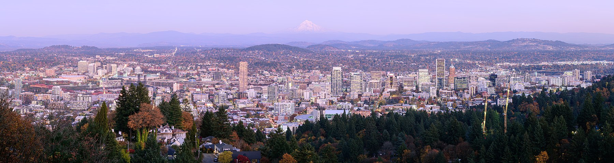

I love Portland, Oregon, because of it's lush green color that exists year-round due to evergreeen trees and an insane amount of rain nearly all year long. Additionally, Portland is beautiful because it has a backdrop of rolling hills and Mt. Hood.
The Portland Oregon Temple is my favorite temple and it is located just south of portland. The Portland Temple holds a special place in my heart because that is where i was sealed to my wonderful spouse 19 years ago. Visit Portland Mountains